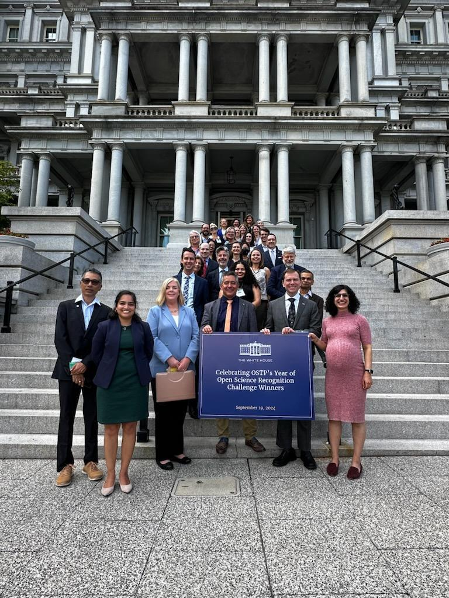
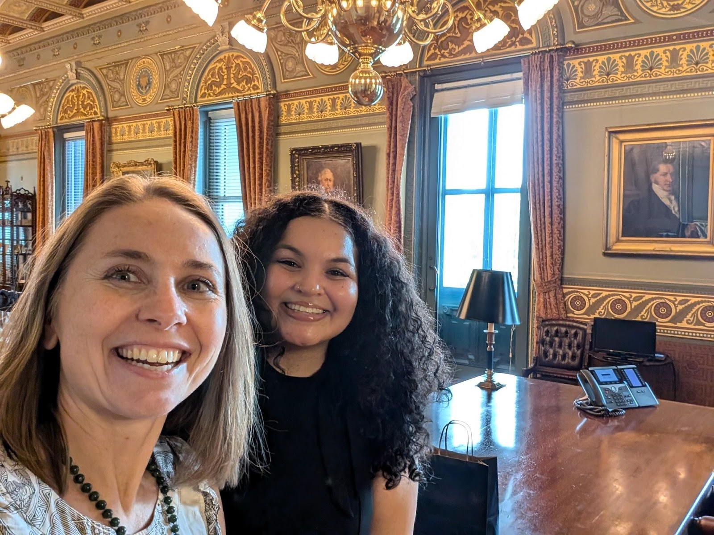

Openscapes recognized at The White House!
On September 19, 2024, Openscapes was recognized at The White House for our work in open science. We were invited to attend the “Celebration of The White House Office of Science Technology and Policy (OSTP) Year of Open Science Recognition Challenge Winners”!
Julie Lowndes (founding director) and Ileana Fenwick (Pathways to Open Science program lead) represented the Openscapes Team and our community at The White House recognition event, as well as at an international open science event called the Open Science Dynamic Convergence Workshop in Washington DC on Sept 18-19, where Julie was a panelist.
This was a BIG DEAL.
We’re so excited that Openscapes was recognized and wanted to share this moment. Why were we invited? What were our experiences? As a followup Community Call, Ileana and Julie “interviewed” each other to share their reactions to and thoughts about their experiences. A few highlights and notes below; you can also watch the full recording and view the annotated photo gallery.
Quick links:
- Photo Gallery Annotated slide deck
- Community Call YouTube recording
- Community Call Collaborative Notes
Cross-posted at openscapes.org/blog, nmfs-openscapes.github.io/blog, nasa-openscapes.github.io/news, openscapes.github.io/pathways-to-open-science/blog
Recognition at the White House
See the Photo Gallery – Annotated slide deck for photos to go along with these moments.
Ileana’s “in the action moment” was being at the table. This was a gilded room with a big rectangular table, ornate chairs around the table and encircling the walls, and open science representatives from 13 federal agencies in attendance. Ileana spoke about how she first heard about open science in 2021, and how she found it so transformative for her science that she developed and leads the Openscapes Pathways to Open Science program for Black environmental & marine researchers to build community for the future of data intensive science. There were also Presidential cupcakes, with sugar seals you could eat!
Julie’s “in the action moment” moment was walking into the building. This was the EEOB (Eisenhower Executive Office Building); after going through 3 security steps we were suddenly in the building and “unchaperoned” for an hour before our recognition ceremony, and encouraged to explore! It felt big – surrounded by history and structure, but we can shape what we do. There were fossils in the marble floors, stained glass in the ceilings above the spiraling staircases. We went into Vice President Harris’ office! We had aviator sunglasses (courtesy of Julie’s husband Elliot Lowndes) at the ready in case we met President Biden (we did not).
Openscapes was recognized for “movement building for kinder open science for future us: a cross-agency effort at NOAA Fisheries, NASA, and EPA”. Being recognized for “movement building” is significant; it is not an easily-measurable impact. Openscapes’ focus on movement building is having real impact shifting culture across academia, government, and non-profit groups. We help people find each other and collaboratively evolve their work with modern and kind workflows, and there are now over 1000 people who are/have been involved with Openscapes, including those who have brought this with them to new positions and jobs. We all approach open science as a daily practice, a way to work differently, in a kinder way and connect big challenges with daily work. This can show up in different ways depending on our situations, and the work that is long-term, ongoing, and intentional. Scroll recent blog posts to get a sense of this work.
The White House recognition follows from an Openscapes submission to The White House Office of Science & Technology Policy Open Science Recognition Challenge in Fall 2023, which was looking to recognize open science stories to benefit society. Co-authors (5 max) were: Julia Lowndes (Openscapes founding director who co-leads & supports initiatives); Erin Robinson (Metadata Game Changers co-founder who co-leads NASA Openscapes & helped scale Openscapes with the Flywheel); Eli Holmes (NOAA Fisheries Open Science lead, a 3-year initiative by the NOAA Fish Office of Science & Tech); Ileana Fenwick (Pathways to Open Science lead & a fierce advocate for HBCUs); Luis López (NASA Openscapes cloud infrastructure lead & develops open source tools).


Openscapes made a 7-minute statement; we quoted Dr. Justin Rice (Deputy Manager at NASA Earth Science) and Dr. Evan Howell (Director, Office of Science and Technology at NOAA Fisheries) about the impact of Openscapes on their agencies; shared about the Flywheel & forking as the first step, as well as Champions & Pathways to Open Science programs.
“The impact that Openscapes has had in the last 2 years is unprecedented at NASA” — Dr. Justin Rice, Deputy Project Manager for Data Systems for NASA Earth Science Data and Information System (ESDIS)
“Over the month or two I thought about the proposal, I met numerous people in the field involved in this initiative, and *everyone* was positive and supportive of the endeavor, which is something I don’t think I’ve ever experienced in my career to date.” — Dr. Evan Howell, Director, Office of Science and Technology at NOAA Fisheries
Our big ask was that people need to be paid to learn, teach, contribute to open source, and collaborate across organizations - there aren’t enough examples of what a sustainable career in open science looks like. If we’re asking people to change the way they work for open science, we need to change the way we work too – what levers can we pull with contracts, procurement, and reporting to fund that work and make it enduring. Ileana also underscored how important investing in HBCUs is, as they provide a huge proportion of our workforce.

Watch the Community Call recording and browse the collaborative notes to hear more about The White House, our experiences, and the other awesome groups recognized there. You’ll also hear reflections about the Open Science Dynamic Convergence Workshop that we attended, organized by the Open Research Community Accelerator (ORCA), in collaboration with CERN and UNESCO and with the participation of NASA and the National Science Foundation. This was a real international group and exciting to engage with open science on a more global scale. The collaborative notes also have Julie’s talking points from the panel.
Resources
The Open Science Dynamic Convergence Workshop brings together researchers, students, policymakers, funders, and other stakeholders to highlight impactful open science activities, explore collaboration opportunities, and find practical ways to speed up the global adoption of open science.
Openscapes post: Biden-Harris Administration announces support for NOAA Fisheries’ data, infrastructure, and workforce modernization in part via Openscapes
NOAA Fisheries announcement Aug 15, 2024: Biden-Harris Administration Announces $34 Million to Modernize NOAA Fisheries’ Data, Infrastructure and Workforce
Openscapes post: White House Fact Sheet Mentions Openscapes!
Mentions Openscapes! FACT SHEET: Biden-Harris Administration Marks the Anniversary of OSTP’s Year of Open Science, Jan 31, 2024
White House Office of Science & Technology Policy Announces Year of Open Science Recognition Challenge Winners, March 21, 2024
Teams recognized
ELOKA - Co-developing tools for sharing Arctic Indigenous Knowledge
Pediatric Cancer Data Commons - Curing childhood cancer: Transforming human health through data
Zooniverse - Harnessing the power of 2.6 million people for open science
FoodMASTER - Open science advances education
Project Jupyter - Reproducible and collaborative computational science and education
CROCUS - Putting Chicago Communities’ Climate Challenges in Focus (DOE Project)
Lyme Innovation and LymeX Together, Redefining the Lyme Status Quo (HHS Project)
Openscapes - Movement building for a kinder open science for future us (Effort at NOAA Fisheries, NASA, and EPA)
Aurorasaurus - Illuminating open, participatory science (NASA Project)
Citation
@online{fenwick2024,
author = {Fenwick, Ileana and Lowndes, Julie},
title = {Openscapes Recognized at {The} {White} {House!}},
date = {2024-10-03},
url = {https://openscapes.org/blog/2024-10-03-openscapes-recognized-white-house},
langid = {en}
}